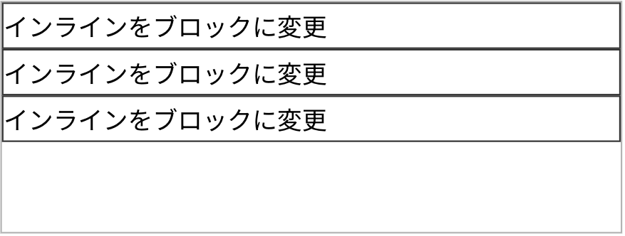
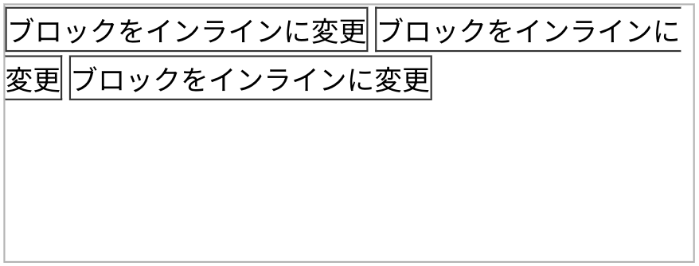
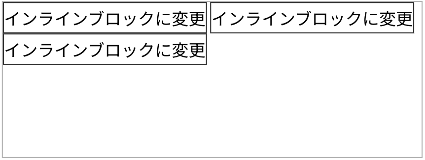
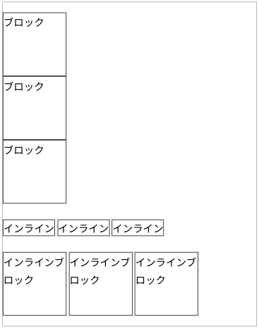
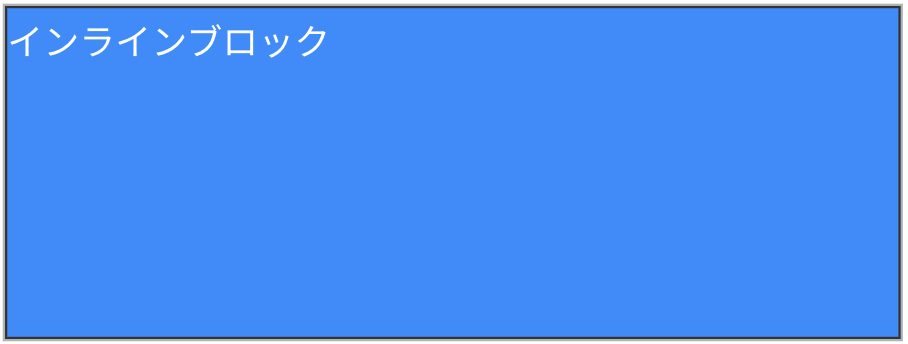
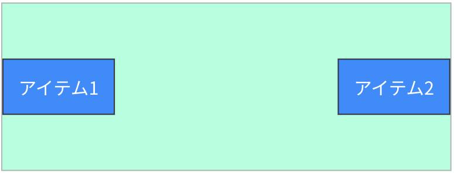
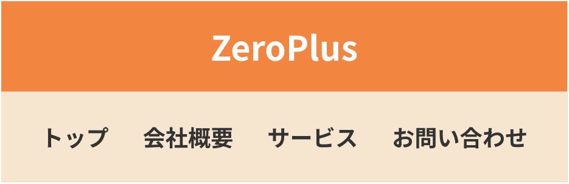
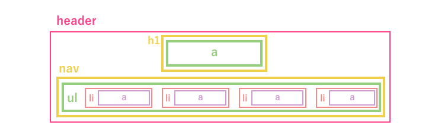

完成イメージ

やってみよう！
<div>
<a class="inline-to-block">インラインをブロックに変更</a>
<a class="inline-to-block">インラインをブロックに変更</a>
<a class="inline-to-block">インラインをブロックに変更</a>
</div>
要素の表示形式を変更したい場合は、CSSのdisplayプロパティを使用します。
今回はaタグ（.inline-to-block）の表示形式をブロックにしたいので、aタグ（.inline-to-block）に以下のようなCSSを適用します。
.inline-to-block {
display: block;
}
参考記事にて「blockの特徴」を確認しましょう。
blockの特徴の一つとして「縦に要素が並ぶ」というものがありますが、これはblockの要素の横幅は親要素いっぱいに広がるという仕様であるためです。
完成イメージ

やってみよう！
<div>
<div class="block-to-inline">ブロックをインラインに変更</div>
<div class="block-to-inline">ブロックをインラインに変更</div>
<div class="block-to-inline">ブロックをインラインに変更</div>
</div>今回はdivタグ（.block-to-inline）の表示形式をインラインにしたいので、divタグ（.block-to-inline）に以下のようなCSSを適用します。
.block-to-inline {
display: inline;
}
参考記事にて「inlineの特徴」を確認しましょう。
inlineの特徴の一つとして「横に要素が並ぶ」というものがありますが、これはinlineの要素の横幅は子要素の幅分だけになるという仕様であるためです。
完成イメージ

やってみよう！
<div>
<div class="block-to-inline-block">インラインブロックに変更</div>
<div class="block-to-inline-block">インラインブロックに変更</div>
<div class="block-to-inline-block">インラインブロックに変更</div>
</div>今回はdivタグ（.block-to-inline-block）の表示形式をインラインブロックにしたいので、divタグ（.block-to-inline-block）に以下のようなCSSを適用します。
.block-to-inline-block {
display: inline-block;
}
参考記事にて「inline-blockの特徴」を確認しましょう。
inline-blockの特徴の一つとして「横に要素が並ぶ」というものがあります。
これはinlineと同じく、inline-blockの要素の横幅は子要素の幅分だけになるという仕様であるためです。
inlineとinline-blockの違いについては次のStepでも取り扱いますが、一旦この段階でも参考記事を確認して把握しておきましょう。
<div>
<div class="wh">ブロック</div>
<div class="wh">ブロック</div>
<div class="wh">ブロック</div>
</div>
<div>
<a class="wh">インライン</a>
<a class="wh">インライン</a>
<a class="wh">インライン</a>
</div>
<div>
<div class="wh">インラインブロック</div>
<div class="wh">インラインブロック</div>
<div class="wh">インラインブロック</div>
</div>指示通り.whにwidthとheightを100pxずつ設定しましょう。
.wh {
width: 100px;
height: 100px;
}下記の完成イメージの通りになっていたら正常です。
完成イメージ

表示形式ごとに「幅・高さの指定」ができるもの・できないものがあります。
・ブロック → 幅と高さが指定できる
・インライン → 幅と高さが指定できない
・インラインブロック → 幅と高さが指定できる
インラインには幅と高さが指定できない仕様となっています。
そのため、デフォルトで表示形式がインラインであるaタグなどに幅・高さの指定をしたい場合は、表示形式をインライン以外にする必要がありますので注意しましょう。
また、インラインは「上下の余白が調整できない」という特徴もありますので、その場合も同じく表示形式の変更が必要になります。
完成イメージ

やってみよう！
<div>
<div class="wh-100">インラインブロック</div>
</div>.wh-100に以下のようなCSSを適用します。
.wh-100 {
width: 100%;
height: 100%;
}
height・widthの値が100%の場合、「親要素いっぱいに広がる」という意味になります。
今回の設問の場合、青色の要素である.wh-100にheight150px・width400pxをつければ完成イメージ通りの見た目にはなりますが、そのような記述にしてしまうと親要素の大きさに修正があった場合に子要素の値も修正する必要が出てきます。
Web制作では後の修正も考慮してコーディングすることが望ましいためため、「親要素いっぱいに広げる」という場合には100%という値が使用される場合が多いです。
完成イメージ

やってみよう！
<div class="flex-parent">
<div class="flex-children">アイテム1</div>
<div class="flex-children">アイテム2</div>
</div>
今回は、アイテム1とアイテム2を横並びにしたうえで、親要素に対して左右端に寄せるという完成イメージです。
.flex-parentに以下のようなCSSを適用することで実現が可能です。
.flex-parent {
display: flex;
align-items: center;
justify-content: space-between;
}参考記事にてflex系プロパティを確認しましょう。
■ 手順 1
アイテム1とアイテム2が横並びになっているので、.flex-parentにdisplay:
flex;をつけて横並びにします。
横並びにしたい要素の親にflexをつけるという点を押さえておきましょう。
■ 手順 2
アイテムを上下中央揃えをするために、.flex-parentにalign-items:center;をつけます。
align-itemsはflex系のプロパティであり、display: flex;
と併用する必要があります。
■ 手順 3
アイテムを親要素に対して左右端に配置するために、.flex-parentにjustify-content:
space-between;をつけます。
justify-contentもflex系のプロパティであり、display: flex;
と併用する必要があります。
<div>
<a class="button">ボタン</a>
<a class="button">ボタン</a>
</div>
.buttonに以下のようなCSSを適用することで実現が可能です。
模範解答以外のCSSでも完成イメージ通りの形を作ることが可能ですが、flexの特徴を掴むための一例として参考にしてください。
.button {
width: 200px;
height: 60px;
display: flex;
align-items: center;
justify-content: center;
}以下の手順は一例です。CSSの記述順に決まりはありませんので、結果的にデザイン通りになればOKです。
■ 手順 1
まずは要素の大きさを整えるために.buttonにwidth
200px,
height:100pxをつけてみます。（数値は目視で適当に設定してOKです）
これだけでは大きさが変わりませんね。理由はaタグは表示形式がインラインなのでwidth,heightが効かない仕様だからです。aタグにwidth,heightを適用させたい場合は表示形式をインライン以外にする必要があります。
■ 手順 2
.buttonにdisplay: flex;をつけてみます。
width, heightが効きましたね！
「aタグにwidth,heightを適用させたい場合は表示形式をインライン以外にする必要がある」について、これはblockやinline-blockだけでなくflexでもOKです。
なぜblockやinline-blockではなくflexを選択したのかは次の手順に関わってきます。
■ 手順 3
前の手順までで四角枠の大きさは整いましたが、テキストが左上に寄っているので上下左右中央揃えにしてみましょう。
.buttonにjustify-content:
center;とjustify-content:center;をつけます。
テキストが上下左右中央揃えになりましたね！
実はflexにはタグ内のテキストの上下左右中央揃えができるという特徴もあります。
ボタンの中のテキストを上下左右中央揃えにする際に使用されることが多いので、このやり方も知っておきましょう。
完成イメージ

やってみよう！
こちらはヘッダーのHTML構造を図にしたものです。参考にしてHTMLを書いてみましょう。

HTML,CSSの模範解答は以下の通りです。
模範解答以外のCSSでも完成イメージ通りの形を作ることが可能ですが、Step1~3で扱った内容の特性を掴むための一例として参考にしてください。
<header class="header">
<p class="header-logo">
<a href="index.html" class="header-logo_link">ZeroPlus</a>
</p>
<nav class="header-nav">
<ul class="header-nav_list">
<li class="header-nav_item">
<a href="" class="header-nav_link">トップ</a>
</li>
<li class="header-nav_item">
<a href="" class="header-nav_link">会社概要</a>
</li>
<li class="header-nav_item">
<a href="" class="header-nav_link">サービス</a>
</li>
<li class="header-nav_item">
<a href="" class="header-nav_link">お問い合わせ</a>
</li>
</ul>
</nav>
</header>.header {
text-align: center;
background: #F28A2B;
}
.header-logo {
color: #fff;
font-size: 24px;
font-weight: bold;
height: 64px;
display: inline-block;
}
.header-logo_link {
height: 100%;
display: flex;
align-items: center;
}
.header-nav {
background: #F7E6CC;
}
.header-nav_list {
height: 64px;
display: flex;
justify-content: center;
gap: 24px;
}
.header-nav_link {
font-weight: bold;
height: 100%;
display: flex;
align-items: center;
}
HTML-CSS-01授業内での演習でヘッダーの作成を行います。
授業内でコードの解説がありますので、予習の段階では模範解答を確認してStep1からStep3までの知識がどこで使われているか確認しておきましょう。
入学テストやこの予習の内容を振り返り、事前準備をしておくと授業内での理解がより深まりますので、何度か入学テストやこのチャレンジ問題に挑戦しておくと良いでしょう。
また、ZeroPlusでは模写練習用の追加課題を複数用意しております。
授業開始後や卒業後でもご活用いただけるものですが、余裕があり取り組みたい方は質問フォームにて「1つ目の追加課題ください！」とご連絡ください。